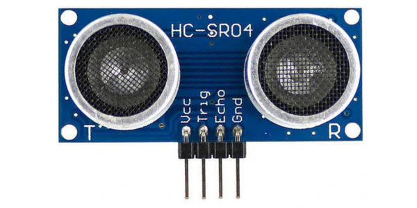
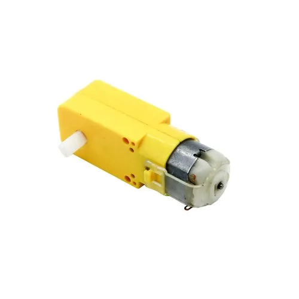
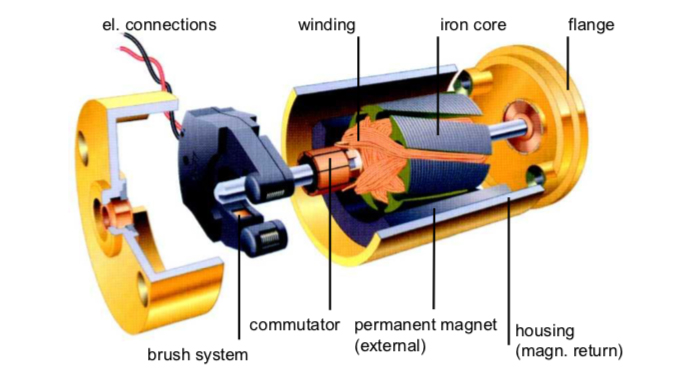
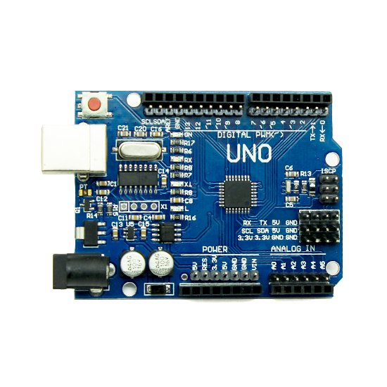
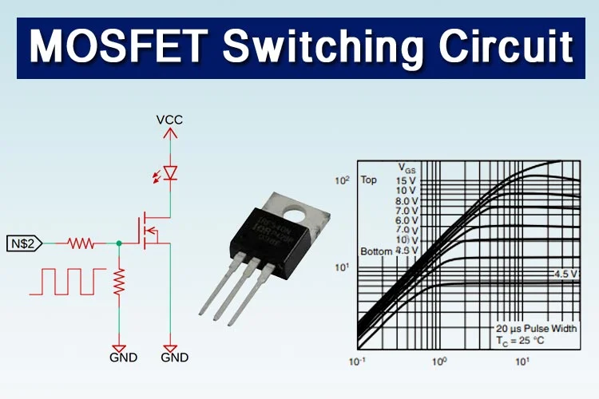

📅 Day 11: Physical AI, Sensors, Actuators & Embedded Systems
Date: 1 June 2026
🧠 1. What is Physical AI?
Physical AI = AI Models + Sensors + Actuators + Control Systems. It’s what makes robots, self-driving cars, and smart factories possible.
🔁 Simple Flow
Sensors → Processor (AI) → Decision → Actuator → Physical Action
📸 Diagram

(Place image: physical-ai-flow.png)
🚀 Applications
- Robotics (e.g., robotic arms, humanoids)
- Autonomous vehicles (self-driving cars)
- Smart manufacturing (predictive maintenance)
📡 2. Sensors – The “Eyes & Ears” of a System
Sensors convert physical quantities (light, distance, temperature) into electrical signals.
🔵 Active Sensors
Require external power & emit energy. Examples: Ultrasonic (distance), Radar, IR, LiDAR.

Ultrasonic Sensor

IR Sensor
🟢 Passive Sensors
Detect natural energy without emitting. Examples: LDR (light), Thermistor (temperature), Photodiode.

LDR Sensor (Light Dependent Resistor)
⚙️ 3. Actuators – Making Things Move
Actuators convert electrical signals into physical motion (rotation, linear movement).
- DC Motor – simple speed control (fans, robots)

- Servo Motor – precise position (robotic arms, RC cars)

- Stepper Motor – step-by-step rotation (3D printers, CNC)

- BLDC Motor – efficient, long life (drones, EVs)

BLDC Motor (Brushless DC)
🎛️ 4. Control Systems – P, PI, PID
Controllers keep a system stable and accurate.
- P (Proportional) – reduces error proportionally.
- PI (Proportional + Integral) – removes steady-state error.
- PID (Proportional + Integral + Derivative) – smoothest response, used in drones, robots, temperature control.

📟 5. Microcontrollers – The “Brain”
Arduino Uno/Nano/Mega
ATmega328P, 16MHz, 2KB RAM, 32KB Flash. Great for beginners, sensor interfacing.

ESP32
Dual core, 240MHz, Wi-Fi + BLE, 520KB RAM. Perfect for IoT and edge AI.

Comparison
- Arduino – simple, low power, no wireless.
- ESP32 – faster, has Wi-Fi/BLE, more memory.
☁️ 6. Edge Computing
Processing data near the source instead of sending everything to the cloud → low latency, privacy, faster decisions.

Edge Computing vs Cloud Computing
🔌 7. MOSFET – High‑Speed Switch
Metal Oxide Semiconductor Field Effect Transistor – used to control motors, LEDs, and power electronics with PWM signals.

📌 Key Takeaways
- Physical AI = sensors + processing + actuators + control.
- Active sensors emit energy; passive sensors detect natural energy.
- Actuators turn electrical signals into motion (servo, stepper, DC).
- PID controllers make systems accurate and stable.
- Arduino is beginner‑friendly; ESP32 adds wireless and power.
- Edge computing enables real‑time AI in robots and IoT.